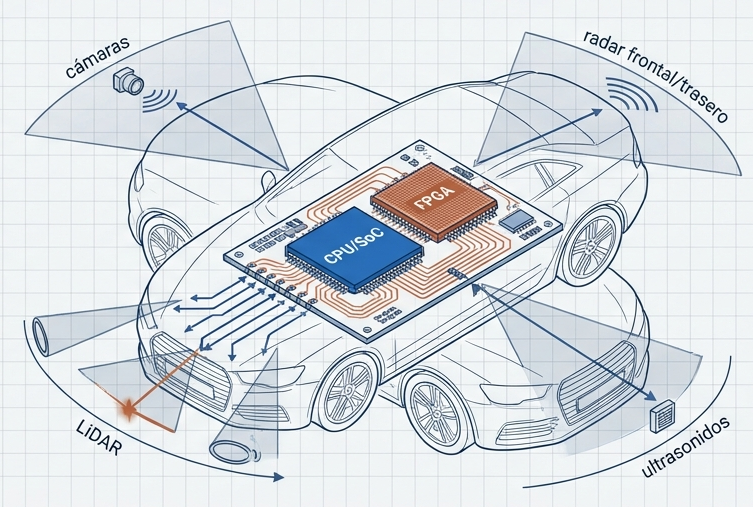

Cámaras, radar de 77 GHz y LiDAR en tiempo real operando bajo estrictos límites térmicos y de seguridad.
Ni los microcontroladores, ni las GPUs ni los ASICs resolvían solos la fusión determinista y flexible de 2015.
El recorrido real desde el Audi A8 (Cyclone V) hasta Intel GO, Mobileye y las eFPGAs actuales.

Dos transformaciones simultáneas que convergieron en la mayor compra histórica de Intel hasta esa fecha
Coste de desarrollo (NRE), velocidad de cambio en ADAS y ciclos de vida de 10–15 años
Exige decenas de millones en coste fijo (NRE) y homologación. Entre 2014 y 2017, los algoritmos ADAS, sensores y pruebas Euro NCAP cambiaban cada pocos meses: un ASIC corría el riesgo de nacer obsoleto.
Sin un volumen homogéneo masivo por modelo, la FPGA amortiza mucho mejor su coste de desarrollo medio frente al enorme coste fijo del ASIC.
Un vehículo exige 10–15 años de fabricación y soporte. La reconfigurabilidad hardware permite adaptar sensores, corregir fallos o actualizar vía OTA sin rediseñar el silicio.
Arquitectura espacial paralela frente al riesgo mortal de la latencia variable en carretera
El «foso regulatorio» que Intel compró ya construido en Altera (AEC-Q100 y AFSDP)
Validado con TÜV Rheinland para familias Cyclone V / Cyclone V SoC y MAX 10: incluye manuales de seguridad, herramientas FMEDA e IP de diagnóstico listas para certificación de sistema.
Fusión multisensor en tiempo real, visión envolvente 360°, DSP de radar 77 GHz y preprocesado de nubes de puntos LiDAR.
Puente programable de E/S entre buses heterogéneos: CAN-FD, FlexRay, LVDS, MIPI y Automotive Ethernet / TTEthernet / TSN.
Gestión multipantalla de baja latencia, escalado de vídeo y corrección óptica (warping) para Head-Up Displays.
Control vectorial (FOC / PWM) de altísima frecuencia con determinismo en nanosegundos para inversores de motor y gestión BMS.
Diagnóstico comparativo de arquitecturas de silicio frente a los requisitos críticos del automóvil
| Criterio Automotriz | MCUej. Infineon AURIX | GPU / SoCej. NVIDIA Tegra / Orin | FPGA / SoC FPGAAltera Cyclone V / Arria 10 | ASIC ADASej. Mobileye EyeQ |
|---|---|---|---|---|
| Latencia determinista | Muy alta Tiempo real estricto |
Baja / Media Riesgo de jitter por SO y drivers |
Muy alta (Cero jitter) Respuesta fija en microsegundos |
Alta Circuito dedicado |
| Ancho de banda sensores y paralelismo | Muy bajo Insuficiente para vídeo / LiDAR |
Muy alto Redes neuronales densas |
Alto Concurrencia HW y E/S flexible |
Muy alto Optimizado a una carga fija |
| Flexibilidad post-fabricación | Alta (SW) Sobre CPU limitada |
Alta (SW) CUDA / frameworks IA |
Total en hardware Reconfigurable en campo / OTA |
Nula Lógica grabada en silicio |
| Eficiencia / Envolvente térmico (TDP) | Excelente < 5 W |
Baja / Exigente Alto consumo y refrigeración |
Alta Lógica adaptada al flujo de datos |
Máxima Mejor TOPS/W en volumen |
| Coste NRE y Time-to-Market | Bajo / Inmediato | Bajo / Rápido | Medio / Corto Ideal transición y volúmenes medios |
Muy alto / 3–5 años Solo viable a gran escala |
| Rol ideal en el vehículo | Seguridad funcional ASIL-D y actuación (freno, dirección) | Inferencia IA pesada y visión envolvente 360° | Fusión multisensor, glue logic E/S, prototipado y redes deterministas | Visión por computador homogénea en producción masiva |
Cuatro paradigmas de silicio cooperando en la misma PCB del Audi A8 (anunciado el 5 de enero de 2015)
Cómo encajaba Altera como primer escalón dentro del plan maestro para el coche autónomo
Domina la fase de estándares cambiantes, integración de interfaces heterogéneas y validación en flotas (Cyclone V SoC y Arria 10).
Replica el mismo patrón que en los centros de datos: una vez estabilizado el algoritmo, el ASIC aporta la máxima eficiencia PPA y menor coste por coche.
Qué funcionó, dónde falló la ejecución industrial de Intel y por qué las FPGAs siguen vigentes
Consolidación extrema de ECUs en nodos zonales unidos por Ethernet determinista (TSN) y puentes de sensores reconfigurables.
Inferencia adaptativa en el borde con baja precisión aritmética para maximizar rendimiento sin penalizar la autonomía de vehículos eléctricos (EV).
FPGAs embebidas en SoCs para 15 años de actualizaciones OTA, detección hardware de intrusiones CAN/Ethernet y criptografía post-cuántica (PQC).
Respuesta directa a qué necesitaba la automoción de las FPGAs detrás de la operación Intel–Altera